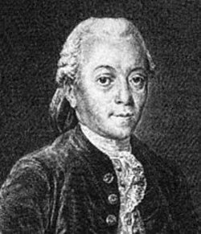

|
Cenas un dažādi iepakojumi: |
Periodiski novietoti skaitļi |
Garumi trapecēs u.c. |
|
Dalīšanas atlikumi \[30 = 4 \cdot 7 + \color{#F00}{2}\] |
Sēdvietas, datumi |
Cita vietu numurēšana |
(3) Summa \(S_n\) kā laukums
(4) Skaitļu \(7k\) (un \(7k+a\)) skaits intervālā:
(5) \(d=3\) un \(d=4\) sakrītošie locekļi:
(6) Fiksētu atlikumu izteiksmes ar \(a=bq+r\):
| Pāra sk. | \(2k\) |
| Nepāra sk. | \(2k+1\) |
| Beidzas ar “3” | \(10k+3\) |
(7) Skaitļi, kas dalās ar \(2\), bet nedalās ar \(4\):
Ja \((a_k)\) ir \(2,6,10,14,18,22,\ldots\)
tad visiem \(k\): \(\mbox{LKD}(a_k,4)=2\).
(8) \(15\)-staru zvaigzne reizēm nesanāk:
(9) Ar \(15\) un \(8\) centu monētām var samaksāt 1¢:
Šo summu var aprēķināt ar formulu: \[S_n = \frac{a_1 + a_n}{2}\cdot{} n\]
Bieži jāsummē naturālie skaitļi līdz \(n\):
\[ 1+2+\ldots+(n-1)+n = \frac{n(n+1)}{2}.\]
Lai gan polinoma \(\frac{n(n+1)}{2} = \frac{1}{2}n^2 + \frac{1}{2}n\) abi koeficienti ir daļskaitļi, visas tā vērtības ir naturāli skaitļi, jo reizinājums \(n(n+1)\) vienmēr ir pāru.
Pamatojums: Divu pēc kārtas sekojošu skaitļu reizinājumā \(n \cdot (n+1)\) viens no reizinātājiem ir pāra skaitlis, otrs nepāra. Tādēļ reizinājums vienmēr ir pāra.
Summai \(1+2+\ldots+n\) ir līdzība ar t.s. “trijstūru skaitļiem”:
Trijstūru skaitlis \(T_n\) izsaka arī, cik veidos no \(n+1\) elementiem var izvēlēties divus: \(T_n = C_{n+1}^2\).
Ja \(n\) ir nepāru: \(S_7 = a_1+a_2+a_3 + a_4 + a_5 + a_6 + a_7 = \frac{a_1+a_7}{2}\cdot{}7\) dalās ar \(7\) un ar \(a_4=\frac{a_1+a_7}{2}\).
Ja \(n\) ir pāru: \(S_8 = a_1+a_2+a_3 + a_4 + a_5 + a_6 + a_7 + a_8 = \frac{a_1+a_8}{2}\cdot{}8\) dalās ar \(n/2=4\) un ar \(a_4+a_5\): divkāršotu progresijas aritmētisko vidējo.
(Ja \(n\) ir pāru, tad progresijas locekļu aritmētiskais vidējais var nebūt vesels.)
Vairāku pēc kārtas sekojošu naturālu skaitļu summa ir \(177\). Kādas vērtības var pieņemt mazākais no šiem saskaitāmajiem?
Vairāku pēc kārtas sekojošu(i) naturālu skaitļu summa ir \(177\)(ii). Kādas vērtības var pieņemt mazākais no šiem saskaitāmajiem?
TODO: Bilde, kur uzzīmēti dažādi skaitļi, kas ir/nav pēc kārtas sekojoši.
Vairāku pēc kārtas sekojošu naturālu skaitļu summa ir \(177\). Kādas vērtības var pieņemt mazākais no šiem saskaitāmajiem(iii)?
TODO: Bilde, kur atzīmēts katrā grupiņā mazākais skaitlis…
Stratēģija: Pilnā pārlase
Stratēģija: Sākam ar citu parametru (jeb “skatāmies nevis pa horizontāli, bet pa vertikāli”).
Novērojums: Pilnā pārlase nav ātra, jo starp veiksmīgiem saskaitīšanas piemēriem atrodas daudz neveiksmīgu.
Mūsu gadījumā bez \(a_1\) otrs dabisks parametrs ir saskaitāmo skaits \(n\), kuram \[\frac{a_1 + a_n}{2} \cdot{} \color{#F00}{n} = 177.\]
TODO: Bilde, kurā iešanu pa rindiņām \(a_1\) aizstāj skatīšanās uz \(n\).
\(177\) dalās ar nepāru skaitļiem \(n=1\), \(n=3\), \(n = 59\), \(n=177\).
Tas iespējams, ja \(n=2\), \(n=6\), \(n=118\), \(n=354\) (jo skaitlim \(177\) ir tieši \(4\) nepāru dalītāji$).
TODO: Uzzīmēt piemēru progresijai \(a_n\) un \(S_n\) kā virknēm.
TODO: Interpretācija ar \(1+3+5+\ldots+(2n-1)\) un kvadrātu \(n^2\).
Burtnīcā ir \(100\) lapas; tās lappuses sanumurētas dabīgā kārtībā ar numuriem no \(1\) līdz \(200\). Vai izrauto lappušu numuru summa var būt \(1000\), ja tiek izrautas
(a) \(31\) lapa;
(b) \(30\) lapas?
Piezīme. Lapas var neraut pēc kārtas.
Burtnīcā ir \(100\) lapas; tās lappuses sanumurētas dabīgā kārtībā(i) ar numuriem no \(1\) līdz \(200\). Vai izrauto lappušu numuru summa var būt \(1000\), ja tiek izrautas
(a) \(31\) lapa;
(b) \(30\) lapas?
Piezīme. Lapas var neraut pēc kārtas.
TODO: Bilde par 1 lapu, kas ir divas lappuses.
Turklāt autori pasvītrojuši, ka \(100\) lapām atbilst \(200\) lappušu numuri.
Burtnīcā ir \(100\) lapas; tās lappuses sanumurētas dabīgā kārtībā ar numuriem no \(1\) līdz \(200\). Vai izrauto lappušu numuru summa(ii) var būt \(1000\), ja tiek izrautas
(a) \(31\) lapa;
(b) \(30\) lapas?
Piezīme. Lapas var neraut pēc kārtas(iii).
TODO: Bilde, kur skaita pa pāriem lappušu numurus (liek 1 lappuses numurus iekaviņās)
(a) summa būtu nepāru. (b) trīsdesmit \(4k_i-1\) summa nedalītos ar \(4\).
Var pamatot arī ar nevienādību:
Jau \(1+\ldots+60 > 1000\), tādēļ pat vismazāko lapu numuru summa ir par lielu.
Apgalvojums: Ja materiāls punkts kustas ar sākotnējo ātrumu \(v_0\) un paātrinājumu \(a\), tad tā noietais ceļš iegūstams ar formulu, kas līdzīgi iepriekšējai ir kvadrātfunkcija no laika \(t\): \[s = v_0t + \frac{at^2}{2}.\]
Piezīme. Ja materiāls punkts sākumā ir nekustīgs (\(v=0\)) un pēc tam brīvi krīt \(t\) sekundes ar paātrinājumu \(g = 9.81\,m/s^2\), tad tā pārvietojums ir \(\frac{gt^2}{2}\).
Līdzīgi kā aritmētiskas progresijas summa izmanto vidējo locekli, vienmērīgi paātrinātas kustības ceļu var atrast, izmantojot vidējo ātrumu.
Brīvās krišanas paātrinājumam \(g \approx 10\,m/s^2\):
Apgalvojums: Divām aritmētiskām progresijām ar diferencēm \(d_1\) un \(d_2\) vai nu nav kopīgu locekļu, vai arī tie veido aritmētisku progresiju ar diferenci \(\mbox{MKD}(d_1,d_2)\)
Piezīme. Ar \(\mbox{MKD}(a,b)\) apzīmējam divu skaitļu mazāko kopīgo dalāmo.
Trīs no aritmētiskās progresijas locekļiem ir \(41\), \(113\), \(193\). Atrast lielāko iespējamo diferences vērtību, ja zināms, ka tā ir vesels skaitlis.
Trīs no aritmētiskās progresijas locekļiem(i) ir \(41\), \(113\), \(193\). Atrast lielāko iespējamo diferences vērtību, ja zināms, ka tā ir vesels skaitlis.
TODO: Bilde, kur parādītas diferences - nemaz nevar būt pēc kārtas.
Trīs no aritmētiskās progresijas locekļiem ir \(41\), \(113\), \(193\). Atrast lielāko iespējamo(ii) diferences vērtību, ja zināms, ka tā ir vesels skaitlis(iii).
TODO: Bilde, kur skaita pa pāriem lappušu numurus (liek 1 lappuses numurus iekaviņās)
Piemēri:
(A) \(a_k = 5k\) ir \(\lfloor 24/5 \rfloor = \lfloor 4.8 \rfloor\) jeb
(B) \(a_k = 2 + 5k\) pirmais loceklis intervālā \([1;24]\) ir \(a_0 = 2\), bet pēdējais ir \(a_4 = 22\). To pavisam ir \((4-0)+1\) jeb
Cik daudz ir tādu naturālu skaitļu \(n \leq 1000\), kuri nedalās ne ar \(5\), ne ar \(7\)?
Cik daudz ir tādu naturālu skaitļu \(n \leq 1000\), kuri nedalās ne ar \(5\), ne ar \(7\)(i)?
TODO: Bilde, kur redzama loģika “ne ar”/“ne ar”.
Tabula ar gadījumiem?
Stratēģija: Saskaitīt kaut ko citu.
Tabulā (sk. zīmējumu) Katrīnai jāizvēlas \(4\) rūtiņas tā, ka katrā rindā un katrā kolonnā tika izvēlēta tieši viena rūtiņa. Pierādiet: neatkarīgi no tā, kuras \(4\) rūtiņas saskaņā ar šiem noteikumiem Katrīna izvēlēsies, tajās ierakstīto skaitļu summa būs \(64\).
| \(1\) | \(3\) | \(5\) | \(7\) |
| \(9\) | \(11\) | \(13\) | \(15\) |
| \(17\) | \(19\) | \(21\) | \(23\) |
| \(25\) | \(27\) | \(29\) | \(31\) |
Tabulā (sk. zīmējumu) Katrīnai jāizvēlas \(4\) rūtiņas tā, ka katrā rindā un katrā kolonnā tika izvēlēta tieši viena rūtiņa(i). Pierādiet: neatkarīgi no tā, kuras \(4\) rūtiņas saskaņā ar šiem noteikumiem Katrīna izvēlēsies, tajās ierakstīto skaitļu summa būs \(64\).
| \(1\) | \(3\) | \(5\) | \(7\) |
| \(9\) | \(11\) | \(13\) | \(15\) |
| \(17\) | \(19\) | \(21\) | \(23\) |
| \(25\) | \(27\) | \(29\) | \(31\) |
TODO: “Katrā rindā un katrā kolonnā tika izvēlēta tieši viena rūtiņa” - Kuras šaha figūras neapdraudētu cita citu, ja tās šādi izvietotu?
Tabulā (sk. zīmējumu) Katrīnai jāizvēlas \(4\) rūtiņas tā, ka katrā rindā un katrā kolonnā tika izvēlēta tieši viena rūtiņa. Pierādiet: neatkarīgi no tā, kuras \(4\) rūtiņas saskaņā ar šiem noteikumiem Katrīna izvēlēsies(ii), tajās ierakstīto skaitļu summa būs \(64\).
| \(1\) | \(3\) | \(5\) | \(7\) |
| \(9\) | \(11\) | \(13\) | \(15\) |
| \(17\) | \(19\) | \(21\) | \(23\) |
| \(25\) | \(27\) | \(29\) | \(31\) |
TODO: Bilde ar pāris piemēriem, kā var saskaitīt. Konstanta funkcija (eksistē summa \(64\), kas der visiem).
Dalot ar atlikumu, piemēram, ar \(8\) katrs skaitlis \(a\) pārveidojas par summu \(8k+r\), kur \(k\) ir dalījums un \(r\) - atlikums.
Neatkarīgi no rūtiņu izvēles pirmajā tabuliņā būs tieši pa vienam skaitlim no \(\{ 0,8,16,24 \}\), bet otrajā pa vienam no \(\{ 1,3,5,7 \}\). To visu summa ir \(48 + 16 = 64\).
| A0 | A1 | A2 | A3 | A4 | A5 | A6 | A7 |
|---|---|---|---|---|---|---|---|
| 0 | 5 | ||||||
| 10 | 15 | ||||||
| 20 | |||||||
| 25 | 30 | ||||||
| 35 | |||||||
| 40 | 45 |
\(\mbox{LKD}(5,8)=1\), t.i. progresijai \(5k\) ir visi atlikumi, dalot ar \(8\).
| A0 | A1 | A2 | A3 | A4 | A5 | A6 | A7 |
|---|---|---|---|---|---|---|---|
| 0 | 6 | ||||||
| 12 | |||||||
| 18 | |||||||
| 24 | 30 |
\(\mbox{LKD}(6,8)=2\), t.i. progresijai \(6k\) ir tikai \(8/2=4\) atlikumi, dalot ar \(8\). Ja zīmē atlikumus pa apli (un savieno ik pēc \(6\) soļiem), rodas nevis zvaigznīte, bet divi cikli - sarkanais un oranžais.
Cik daudz ir tādu naturālu skaitļu \(n \leq 1983\), kuriem \(3n+5\) dalās ar \(7\)?
Cik daudz ir tādu naturālu skaitļu \(n \leq 1983\), kuriem \(3n+5\) dalās ar \(7\)(i)?
TODO: Daudz skaitļu, no tiem daži der, jāsaskaita…
| A0 | A1 | A2 | A3 | A4 | A5 | A6 |
|---|---|---|---|---|---|---|
| \(5\) | ||||||
| \(8\) | \(11\) | |||||
| \(14\) | \(17\) | \(20\) | ||||
| \(23\) | \(26\) | |||||
| \(29\) | \(32\) | |||||
| \(35\) | \(38\) | \(41\) | ||||
| \(44\) | \(47\) |
Bezū identitāti pamatoja Etjēns Bezū (Étienne Bézout, 1730–1783) 1779.gadā – turklāt uzreiz polinomiem. Veseliem skaitļiem līdzīgs rezultāts ir jau Kloda Bašē de Meziriaka darbos (Claude Gaspard Bachet de Méziriac, 1581–1638)

Etjēns Bezū
Izmantojot Bezū lemmu, var pierādīt citus svarīgus rezultātus.
Atrisināt:
\(21x + 14y = 2\) .
Algebrā:
Ja abi koeficienti vienlaikus nav \(0\), vienmēr var atrisināt. Patvaļīgi izvēlas, teiksim, \(y\). Izsaka otru nezināmo:
\(x = \frac{2-14y}{21}\).
Skaitļu teorijā: Meklē veselus \(x,y\). \(\mbox{LKD}(14,21) = 7\), tad \(21x + 14y \neq 2\).
Kurus naturālos skaitļus \(n\) var izsacīt formā \({\displaystyle n=\frac{x}{y}}\), kur \(x = a^5\), \(y = b^3\), \(a\) un \(b\) – naturāli skaitļi?
Kurus naturālos skaitļus \(n\) var izsacīt formā(i) \({\displaystyle n=\frac{x}{y}}\), kur \(x = a^5\), \(y = b^3\)(ii), \(a\) un \(b\) – naturāli skaitļi?
TODO: (i) Mājiens, ka dažus var, bet nav zināms, vai visus var (\(a\), \(b\) var izvēlēties).
(ii) Pilni kubi un pilnas piektās pakāpes ir īpaši skaitļi, katrā pietiekami garā intervālā to īpatsvars ir neliels.
Kāpēc izdevās manipulācija ar pakāpēm? Bezū identitāte skaitļiem \(5\) un \(3\):
\[5x + 3y = 1,\;\;\mbox{ja $(x,y)=(2,-3)$.}\]
Šo pašu rezultātu var iegūt arī divos soļos:
(a) Mazākais trīsciparu skaitlis šajā progresijā ir \(12 + 4\cdot{}29 = 128\). Lielākais trīsciparu skaitlis apmierina \(12 + k\cdot{}29 \leq 999\) jeb \(k \leq 34\).
Virknē \(4,\ldots,34\) ir pavisam \((34-4)+1 = 31\) loceklis. Tātad arī attiecīgo progresijas locekļu būs \(31\).
| \(k\) | \(4\) | \(5\) | \(6\) | \(\ldots\) | \(34\) |
|---|---|---|---|---|---|
| \(12+29k\) | \(128\) | \(157\) | \(186\) | \(\ldots\) | \(998\) |
(b) Neveicot aprēķinus, \(a_1\) izvēlas kā mazāko trīsciparu skaitli: \(a_1 = 100\). Tad progresijā ir
Ja progresiju nedaudz nobīdītu, tajā būtu tikai “garantētais” skaits, ko iegūst, dalot “trīsciparu skaitļu intervāla” \([100,1000)\) garumu \(900\) ar \(29\) un apaļojot uz leju: \[\left\lfloor \frac{900}{29} \right\rfloor = \lfloor 31.03448 \rfloor = 31.\]
Sal. 7.klases Atklātās olimpiādes uzdevumu: LV.AO.2011.7.3. Šis uzdevums ir arī atsevišķs gadījums Ķīniešu atlikumu teorēmai, kuru 7.klase nav vēl mācījusies.
Piezīme: Var rakstīt virknes \(20k+13\) un \(21k+3\) tik ilgi, kamēr ir skaitlis, kas parādās abās virknēs – tas arī būs meklētais. (Stratēģija: pilnā pārlase.)
Piezīme 2: Var pārveidot \(21k + 3 = 20k + k + 3\), no kā secināt, ka \(k + 3 = 13\) un \(k = 10\). (Stratēģija: algebrisks pārveidojums.)
Stratēģija: Samazina meklējamo telpu (šeit - ar prasību dalīties ar \(15\)).
Sal. 7.klases Atklātās olimpiādes uzdevumu: LV.AO.2016.7.2.
Stratēģija: Pilnā pārlase.
Var rakstīt pīrādziņu un magoņmaizīšu iespējamās cenas (\(x=1,2,\ldots\) un \(y=1,2,\ldots,200\)), līdzkamēr \(8x\) vai \(15y\) pārsniedz \(200\). Tad atzīmē vērtības, kur \(8x + 15y = 200\).
Progresijās \(8x = 8,16,24,\ldots,200\) un \(15y = 15,30,45,\ldots,195\) ir attiecīgi \(25\) un \(13\) locekļi. Arī šoreiz labāk samazināt meklējumu telpu, lai nebūtu mehāniski jāapskata visi \(25 \cdot 13 = 325\) iespējamie pāri.
| \(x\) | \(1\) | \(2\) | \(\ldots\) | \(10\) | \(\ldots\) | \(24\) | \(25\) |
|---|---|---|---|---|---|---|---|
| \(8x\) | \(8\) | \(16\) | \(\ldots\) | \(80\) | \(\ldots\) | \(192\) | \(200\) |
| \(y\) | \(1\) | \(2\) | \(\ldots\) | \(8\) | \(\ldots\) | \(12\) | \(13\) |
|---|---|---|---|---|---|---|---|
| \(15x\) | \(15\) | \(30\) | \(\ldots\) | \(120\) | \(\ldots\) | \(180\) | \(195\) |
Virknē augošā kārtībā izrakstīti naturālie skaitļi no \(1\) līdz \(2004\) ieskaitot, katrs vienu reizi.(i) Izsvītrojam no tās skaitļus, kas atrodas \(1., 4., 7., 10., \ldots\) vietās. No palikušās virknes atkal izsvītrojam skaitļus, kas tajā atrodas \(1., 4., 7., \ldots\) vietās. Ar iegūto virkni rīkojamies tāpat, utt., kamēr paliek neizsvītrots viens skaitlis. Kurš tas ir?
TODO: Kāds sākumstāvoklis (vai stāvokļi) te aprakstīti?
Virknē augošā kārtībā izrakstīti naturālie skaitļi no \(1\) līdz \(2004\) ieskaitot, katrs vienu reizi. Izsvītrojam no tās skaitļus, kas atrodas \(1., 4., 7., 10., \ldots\) vietās(ii). No palikušās virknes atkal izsvītrojam skaitļus, kas tajā atrodas \(1., 4., 7., \ldots\) vietās. Ar iegūto virkni rīkojamies tāpat, utt., kamēr paliek neizsvītrots viens skaitlis. Kurš tas ir?
TODO: Kas kopīgs un atšķirīgs “skaitlim” ar viņa “vietu”? Vai skaitļa vieta var mainīties. Vai tā mainās uzreiz pēc izsvītrošanas vai vēlāk? Uzdevumi par kopotu rakstu sējumu pārkārtošanu.
Virknē augošā kārtībā izrakstīti naturālie skaitļi no \(1\) līdz \(2004\) ieskaitot, katrs vienu reizi. Izsvītrojam no tās skaitļus, kas atrodas \(1., 4., 7., 10., \ldots\) vietās. No palikušās virknes atkal izsvītrojam skaitļus, kas tajā atrodas \(1., 4., 7., \ldots\) vietās. Ar iegūto virkni rīkojamies tāpat, utt.(iii), kamēr paliek neizsvītrots viens skaitlis(iv). Kurš tas ir?
TODO: Kas ir “palikusī virkne”? “Iegūtā virkne”? Vai uzdevumā aprakstītais beigu stāvoklis vienmēr iestājas? Ja nu paliek neizsvītroti divi vai vairāk skaitļi?
Uzdevumā aprakstītā procedūra sastāv no vairākiem “gājieniem” jeb “iterācijām”. Katras iterācijas laikā izsvītro apmēram trešdaļu no virknes locekļiem, locekļus pārnumurē, iegūstot jaunu virkni.
Stratēģija: Vienkāršojam sev dzīvi
Stratēģija: Sākam no beigām
Apgalvojums: \({\displaystyle x_{n+1} = \left\lceil \frac{3x_n}{2} \right\rceil}\).
Piezīme. \(\lceil x \rceil\) apzīmē augšējo veselo daļu - mazāko veselo skaitli, kas nav mazāks par \(x\).
Apgalvojumu pierādām atsevišķi gadījumiem, kad \(x_n\) ir pāru un \(x_n\) ir nepāru.
Esam pamatojuši, ka skaitļi no \(1\) līdz \(x_n\) pēc \(n\) iterācijām tiek izsvītroti tā, ka paliek tikai pēdējais skaitlis (t.i. \(x_n\))
Apgalvojums: Ja uzrakstīti skaitļi no \(1\) līdz \(X\), kur \(x_n < X < x_{n+1}\), tad pēc \(n\) izsvītrošanām paliks pāri viens skaitlis (tas, kurš sākumā ir vietā ar numuru \(x_n\)).
Piemēram, ja uzrakstīti skaitļi no \(1\) līdz \(15\), tad pēc piecām iterācijām paliks pāri 12.skaitlis.
Pierādījums: Tā kā pirmais skaitlis, kurš “izdzīvo” pēc \(n+1\) iterācijām ir \(x_{n+1}>X\), tad no \(1\) līdz \(X\) pēc \(k\) svītrošanām paliks pāri tikai viens skaitlis (un tas var būt vienīgi \(x_n\), jo svītrošana aiz \(x_n\) šī skaitļa izdzīvošanu neiespaido).
Konstruējam virkni ar rekurento sakarību \({\displaystyle x_{n+1} = \left\lceil \frac{3x_n}{2} \right\rceil}\) līdz tā pārsniedz \(X = 2004\):
\(1; 2; 3; 5; 8; 12; 18; 27; 41; 62;\)
\(\;\;\;\;\;93; 140; 210; 315; 473; 710; 1065; 1598;\)
Katrs nākamais loceklis ir \(1.5\) reizes lielāks par iepriekšējo (vai noapaļots par \(\frac{1}{2}\) uz augšu).
Atbilde: Esam ieguvuši, ka pēdējais neizsvītrotais ir skaitlis \(1598\).
Atrast
(a) visu to naturālo skaitļu summu, kas nepārsniedz \(1000\) un dalās ar \(5\);
(b) visu to naturālo skaitļu summu, kas nepārsniedz \(1000\) un dalās vai nu ar \(3\), vai ar \(5\)(i).
Piezīme. Grāmatas oriģinālā lietota frāze “… un dalās vai nu ar \(3\), vai ar \(5\)”. Tas parasti nozīmē
Grāmatas atrisinājumā tomēr izmantots parastais VAI (kas pieskaita arī tos skaitļus, kas dalās ar \(15\)).
Stratēģija: Kombinēšana pa daļām - skaitām kaut ko citu.
(a) \(5 + 10 + \ldots + 1000 = \frac{5+1000}{2}\cdot 200 = 100500.\)
(b) Summas skaitļiem, kas dalās ar \(3\), ar \(5\) un ar abiem (jeb ar \(15\)):
\[\left\{ \begin{array}{l} 3 + 6 + \ldots + 999 = \frac{3+999}{2}\cdot{}333 = 166833, \\ 5 + 10 + \ldots + 1000 = 100500,\\ 15 + 30 + \ldots + 990 = \frac{15 + 990}{2}\cdot{}66 = 33165. \end{array} \right. \]
Ieslēgšanas-izslēgšanas princips: Saskaitām abus ovālus, atņemam pārklājošos daļu, kas ieskaitīta divreiz: \(166833 + 100500 - 33165 = 234168\).
Kādam mazākajam(i) naturālajam \(n\) visas daļas(ii) \[\frac{5}{n+7}, \frac{6}{n+8}, \frac{7}{n+9},\] \[\ldots, \frac{35}{n+37}, \frac{36}{n+38}\] ir nesaīsināmas?
TODO: Mazākais naturālais \(n\)? Vai vienmēr eksistē? Ko nozīmē “visas daļas nesaīsināmas”?
Vienam un tam pašam \(n\) visas daļas būs nesaīsināmas. Un ja tādu \(n\) ir vairāki, jāatrod starp tiem vismazākais.
Kādam mazākajam naturālajam \(n\) visas daļas \[\frac{5}{n+7}, \frac{6}{n+8}, \frac{7}{n+9},\] \[\ldots, \frac{35}{n+37}, \frac{36}{n+38}\] ir nesaīsināmas(iii)?
TODO: Pietiek vienai būt saīsināmai, attiecīgais \(n\) tiek uzreiz izbrāķēts.
Stratēģija: Pilnā pārlase varētu strādāt (ja pieņemam, ka atrisinājums vispār eksistē), bet katram \(n\) pārbaudīt \(22\) daļas ir darbietilpīgi. Bez tam nav uzreiz redzams, cik daudzi \(n=1,2,\ldots\) būs jāizmēģina.
Stratēģija: Pārtulkojam jautājumu citādi.
Rēķinot \(\mbox{LKD}(a,b)\), starpības starpības ir konstantas:
Jāatrod mazākais skaitlis \(n+2\), kas ir savstarpējs pirmskaitlis ar visiem skaitļiem \(5,6,\ldots,36\).
Kuriem naturāliem skaitļiem \(n\), kas lielāki par \(3\) un nedalās ar \(3\)(i), izpildās īpašība: visi tie naturālie skaitļi, kas mazāki par \(n\) un kuru lielākais kopīgais dalītājs ar \(n\) ir \(1\), veido aritmētisku progresiju?
TODO: Raksturojam skaitļu kopu
Kuriem naturāliem skaitļiem \(n\), kas lielāki par \(3\) un nedalās ar \(3\), izpildās īpašība: visi tie naturālie skaitļi, kas mazāki par \(n\) un kuru lielākais kopīgais dalītājs ar \(n\) ir \(1\)(ii), veido aritmētisku progresiju(iii)?
TODO: Raksturojam \(\Phi(n)\) - tos skaitļus, kas savstarpēji pirmskaitļi ar \(n\). Uzzīmējam parastās daļas \(1/n,...,(n-1)/n\).
Stratēģija: Vispārinām savus novērojumus.
Vispārināšana: Kā secinājumus pārnes uz lielākiem skaitļiem?
Vispārināšana: Kā no šiem pretpiemēriem iegūt vispārīgo atbildi?
Ar \(\Phi(n)\) apzīmējam tos skaitļus no \([1;n]\), kas ir savstarpēji pirmskaitļi ar \(n\).